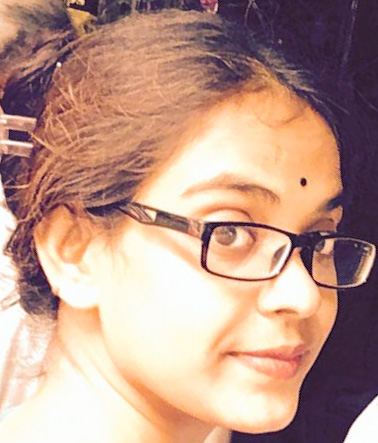
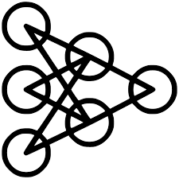
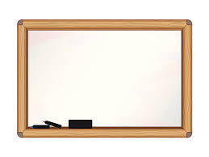

|  |
Abira Sengupta
PhD Researcher
Department of Information Science
Multi Agent System
University of Otago, NZ
Email: abira[dot]sengupta[at]postgrad[dot]otago[dot]ac[dot]nz
|
About Me
Hi, I am Abira. Welcome to my academic webpage. I am a student of Doctoral of Philosophy (PhD) at the Department of Information Science, University of Otago, NZ. My current research work is related to moderating the expected behaviour of agents in open societies.
Research Interests
My primary research focus is in
Computer Vision and Machine Learning and my current project is on deep learning based face recognition for biometrics. However, I am always interested in exploring other areas of computer vision and upcoming machine learning methods. At present I am looking to begin doctoral studies on using generative adversarial networks to synthesize photo-realistic images of mugshots from sketches and audio/text description inputs.
Research Projects[Top]
|  |
[1] April 2017-Present: Indian Statistical Institute | Pre-Doctoral Research
- ConvNet based Face Recognition for Biometric Authentication
[2] July 2011-June 2013: West Bengal University of Technology | Masters Research
- Localized Algorithm for Coverage in Wireless Sensor Networks
[3] July 2011-June 2013: West Bengal University of Technology | Masters Research
- Developing an Academics Management System
|
Selected Publications [Top]
- Nabin Sharma, Abira Sengupta, Rabi Sharma, Umapada Pal, and Michael Blumenstein, "Pincode detection using Deep CNN for postal Automation", IVCNZ, 2017.
[paper]
- Abhijit Das, Abira Sengupta, Umapada Pal, and Michael Blumenstein, "Linking Challenging Face Images Captured from the Optical Phenomenon in the Wild for Forensic Science", IJCB, 2017.
[paper]
- Abhijit Das, Abira Sengupta, Umapada Pal, and Michael Blumenstein, "More Realistic and Efficient Face-Based Mobile Authentication using CNN ", ICB, 2018. (under review)
|  |
[1] Jan 2016-Present: Jadavpur University | Part-time Faculty
- Taught Multimedia and Coding Theory, Multimedia Lab and Numerical Methods.
[2] Jan 2016-Present: Kalyani Government Engineering College | Part-time Faculty
- Taught Automata Theory, Graphics Theory and Algorithms.
[3] Aug 2013-Dec 2016: West Bengal University of Technology | Part-time Faculty
- Taught Computer Architecture, Multimedia and C Programming.
|